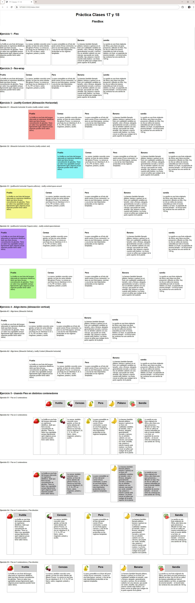

Ejercicio práctico de clases 17 y 18 - FlexBox
Antes que nada
-
Descargue y descomprima el archivo tp_clases17-18.zip, este ya tiene las carpetas necesarias y los documento HTML y CSS para que pueda trabajar
-
Para el siguiente ejercicio, deberá entregar la carpeta del ejercicio en formato .zip con el nombre tp_clases_17-18_nombre_suyo
-
Fecha límite de entrega: Jueves 20/11 14:59hs.
-
El título del documento es: "TP Clases 17-18"
-
Siga al pie de la letra las instrucciones que se incluyen el archivo index.html y styles.css
-
Puede elegir utilizar el archivo styles.css o stylos_version_facil.css según su preferencia y vincúlelo con el documento html
-
El presente ejercicio es para ser visualizado en pantallas de 1024 o más (modelo desktop), como mínimo
-
Realice los ejercicios en el documento html de modo que se ajuste en diseño a la muestra presentada.
Muestra
